リンクカット木は、森 (各連結成分が木のグラフ) に対して以下のクエリに答えることができるデータ構造です。
辺を動的に追加/削除することから、このデータ構造は動的木または動的森と呼ばれるデータ構造に属します。
また、この記事を読むための前提として Splay Tree を \(30\)% ぐらい理解しているといいと思います。
競技プログラミングにおいて、根付き木は隣接リストや、親頂点を管理する配列で表現するのが典型的です。隣接リストによる表現が高い汎用性を持つのに対して、親頂点を管理する方法は LCA や パス取得などの処理に特化しています。このように、どのように木を管理するかは、実現したい処理によって使い分けるのが良いです。
今回、リンク-カット木 (以降は LCT とする) は パスに対するデータ取得 を行うものとして、パスに対するデータ取得に特化した LCT を説明します。
辺が \(1\) つもない状態からはじめ、辺を追加して森を構築していきます。
図 1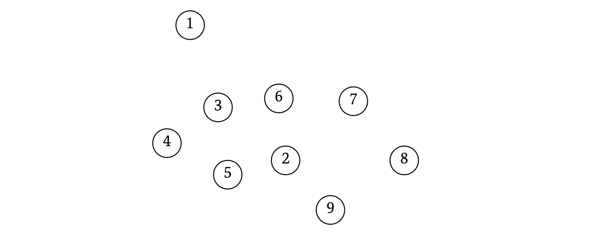
ここで重要なことを言います。LCT においては、森の実体を直接保管しないという特徴があります。どういうことかというと、LCT では木の辺を直接管理しないというトリッキーな方法を取ります。例えば、以下 (図 2) のように木を構築してみます。
図 2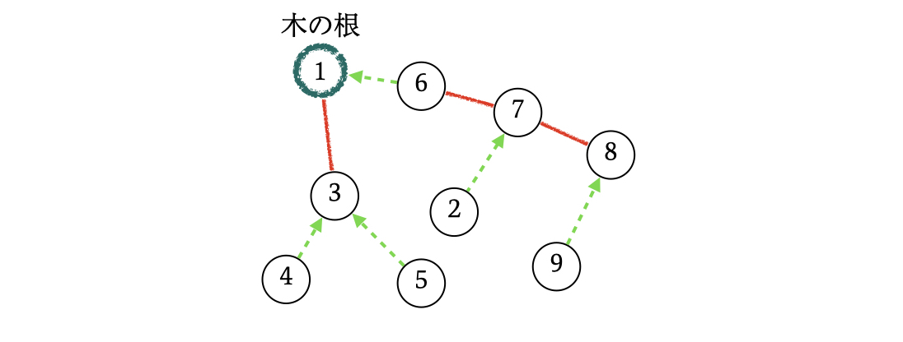
この例では、LCT が管理するデータが、ちょうどたまたま、表現したい木と同じ形になっています。後でこの形は崩れていきます。なお、赤い辺のことを heavy-edge、緑の辺を light-edge と言います。
本来は 遅延評価(後述) によって、LCT が持つデータに未評価部分が存在しますが、図 2 では見やすさのために全ての遅延評価を評価して解消しています。
なお、後に説明する link というメソッドを以下の順に実行することで図 2 の木を得ることができます。
link(8,9);
link(8,7);
link(7,2);
link(7,6);
link(1,6);
link(1,3);
link(3,4);
link(3,5);
LCT は heavy-edge と light-edge を駆使して木をパスに分解して管理します。この記事では赤い辺を heavy-edge に、緑の辺を light-edge に対応させて説明します。
heavy-edge は ひとまとまりのパスを管理するデータ構造 を成し、light-edge は 異なるパス間の関係 を表します。例えば、図 2 は以下のようなパスの集まりに分解できます。長方形の枠で囲った部分がひとまとまりのパスに対応します。
図 3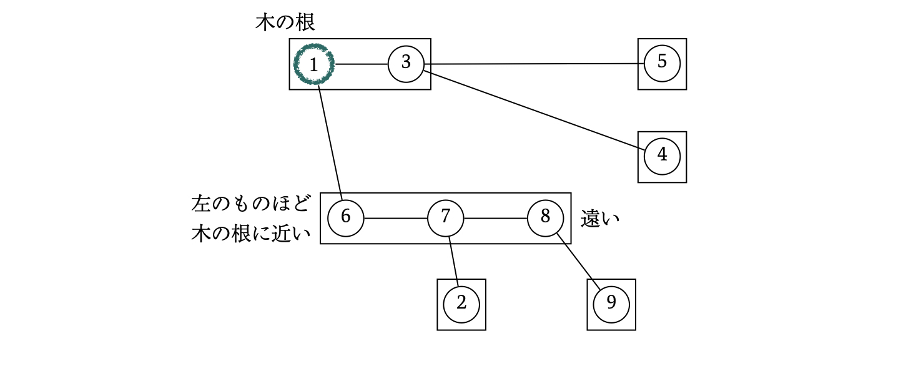
パスは \(1\) 直線なので、各パスを Splay Tree で表現できます。具体的には、左の頂点ほど LCT が表現する木の根に近く、右の頂点ほど LCT が表現する木の根から遠いという順序をもつ Splay Tree で表現します。heavy-edge とは、この Splay Tree の辺のことなのです。
図 4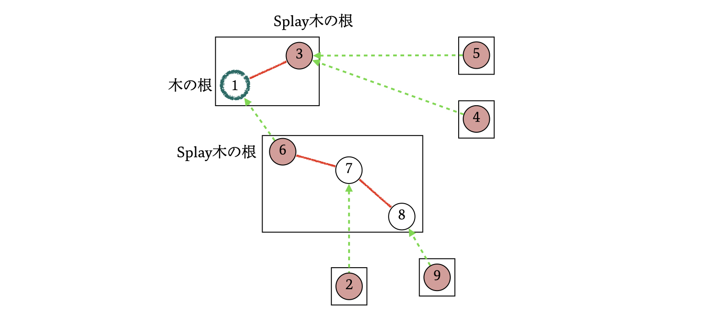
そして、light-edge もまた Splay Tree の辺の亜種です。Splay Tree は根付き木なので、 Splay Tree の辺の \(2\) つの端点のいずれかは親頂点で、他方が子頂点という関係をなします。通常の Splay Tree の辺、すなわち heavy-edge は親と子を双方向に接続する無向辺であるのに対して、light-edge は子頂点から親頂点に向けて一方的に接続する有向辺です。つまり、light-edge で繋がれた子頂点側からは親頂点にアクセスできますが、親頂点側からは子頂点にアクセスできません。
なおこの記事では、LCT が表現する木の根と、パスを管理する Splay Tree の根を区別するために、単に根と書いたときは LCT が表現する木の根を表すことにして、Splay Tree の根を指す場合は省略せずに Splay Tree の根と書きます。辺についても同様の表記としますが、単に heavy-edge や light-edge と書いた場合は暗黙的に Splay Tree の辺であることとします。
まず、最も基本的なメソッドとして以下を定義します。
\(\mathrm{access}(x)\) では、以下の \(3\) つの手続きでイテレーションを行います。ちゃんと読み込まなくても、図による \(\mathrm{access}\) の様子を見ればなんとなくわかると思います。
以上の手続きが終了したとき、根から頂点 \(x\) までのパスが \(1\) つの Splay Tree で表現されており、頂点 \(x\) はその Splay Tree の根になっています。以下に \(\mathrm{access}(9)\) の様子を示します。
はじめ、頂点 \(9\) は単体の Splay Tree なので特別なこともなく splay を完了させます。
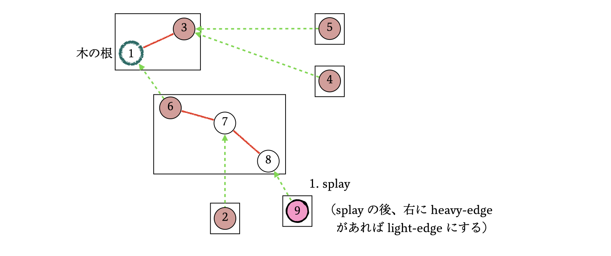
頂点 \(9\) から light-edge で頂点 \(8\) につながっているので、頂点 \(8\) を splay します。このとき、light-edge は回転させないことと、Splay Tree の親方向につながる light-edge は heavy-edge と同様に辺の張り替えが行われることに注意してください。この例では、元々頂点 \(6\) から出ていた light-edge は頂点 \(8\) に受け継がれます。
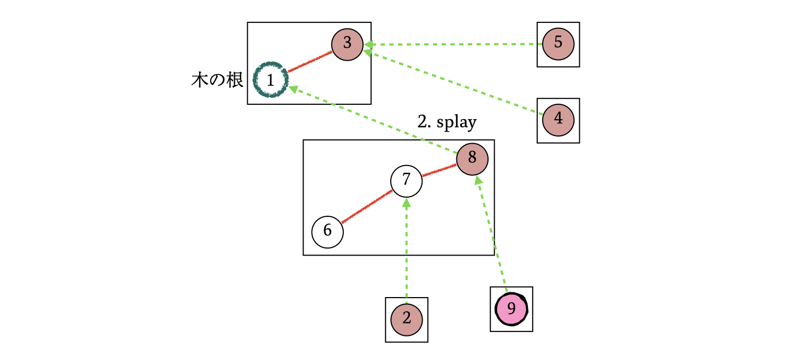
手続き \(2\) で splay した頂点 \(8\) の右の子を、\(\mathrm{access}\) する頂点である頂点 \(9\) に変更します。これによって \(2\) つのパスがマージされました。
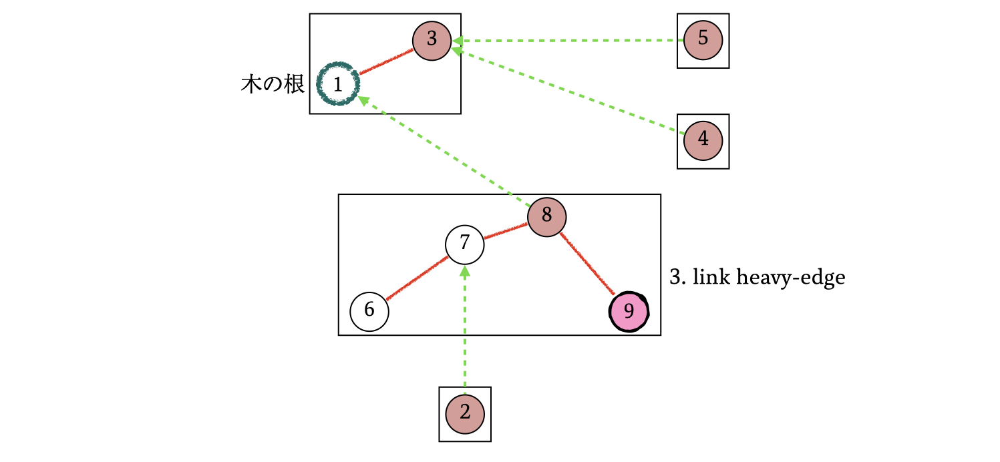
手続き \(1\) に戻り、頂点 \(9\) を splay し、その後頂点 \(9\) から light-edge で接続されている頂点 \(1\) も同様に splay します。
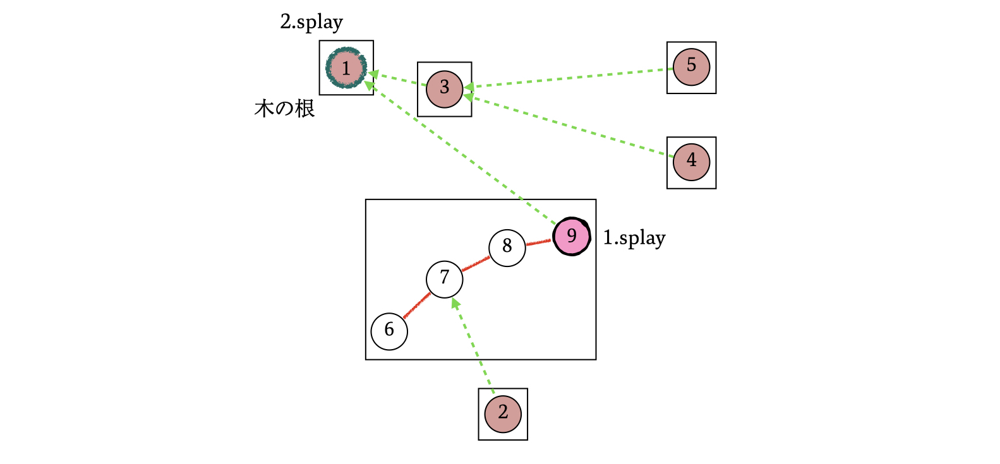
手続き \(2\) で splay した頂点 \(1\) の右の子を、\(\mathrm{access}\) する頂点である頂点 \(9\) に変更します。元々 heavy-edge があった (\(1\) - \(3\)) から heavy-edge が張り変わっていることが確認できます。
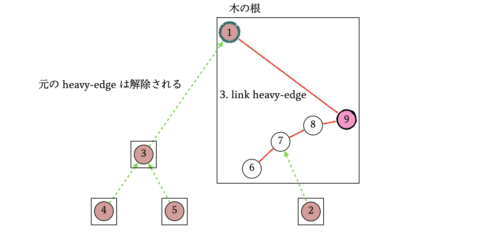
頂点 \(9\) を splay し、その結果、Splay Tree における親方向に辺が出ていなくなったので手続きを終了します。
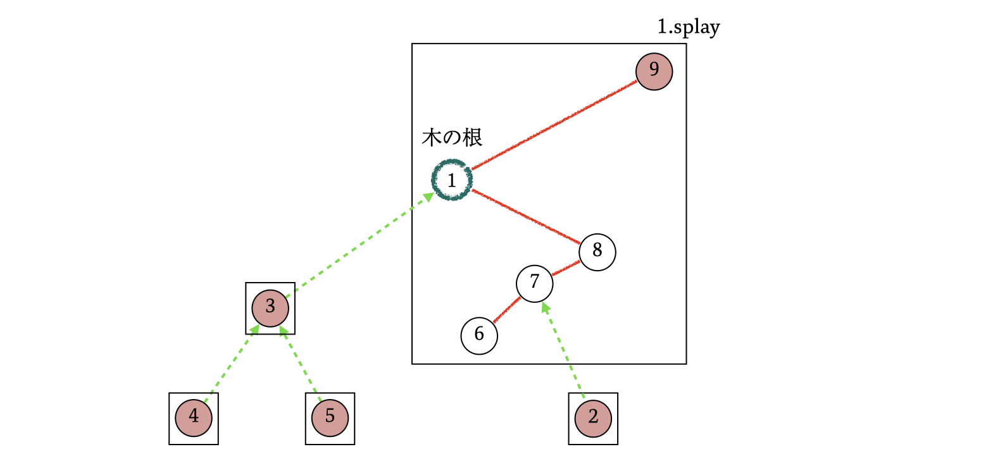
これによって、頂点 \(1\) から頂点 \(9\) までのパスを \(1\) つの Splay Tree で表現することができました。現在の木のパスは以下のように分解して管理されています。
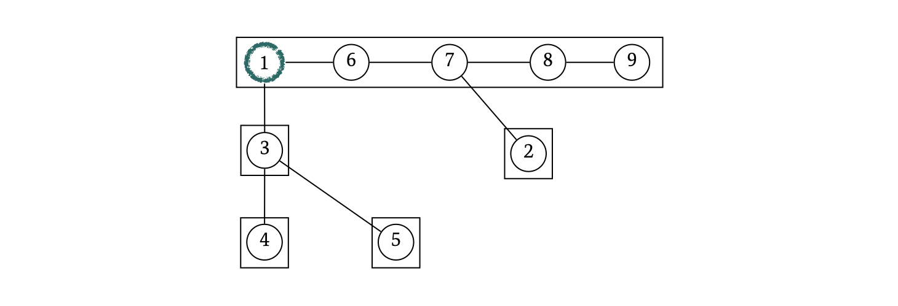
Splay Tree でパスを表現できたので、パスに関して様々な計算を行うことができます。例えば、パスの長さ (辺の個数) はそのパスを管理する \(\mathrm{Splay Tree}\space のサイズ - 1\) です。
頂点 \(x\) が属する連結成分の根が不明の場合、\(\mathrm{access}(x)\) によって根 (不明) から頂点 \(x\) までのパスを Splay Tree で構築し、その Splay Tree の最も左の頂点を取得することで、連結成分の根を取得できます。Splay Tree の最も左の頂点の取得は Splay Tree のメソッドで処理可能です。
\(2\) つの頂点が同じ連結成分に属するかどうかも、それぞれの頂点の属する連結成分の根を見て判定することができます。
連結成分の根の変更メソッドとして、以下を定義します。
手続きはシンプルで、以下の \(2\) ステップからなります。
例えば頂点 \(9\) を連結成分の根にする場合、まずは \(\mathrm{access}(9)\) によって根からのパスを構築します。
その後、頂点 \(9\) に左右反転の遅延評価をかけます。
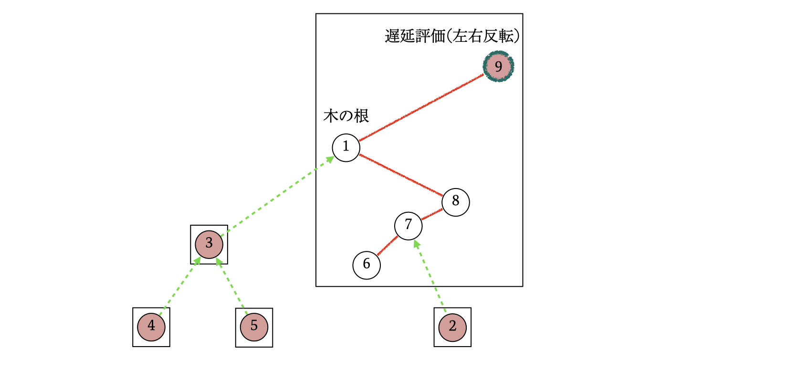
パスを管理する Splay Tree を、木の根に近い頂点ほど左にあるという順序で構築していたので、パスを左右反転すると、その影響で自動的に木の根が変更されます。
図 13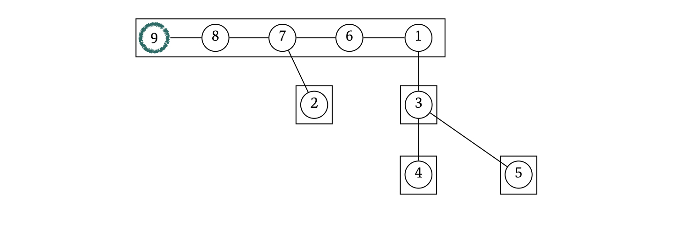
左右反転の遅延評価があることでわかりやすり図示が困難になってしまうので、以降は遅延評価を全て評価して解消した状態の図を見せます。
図 14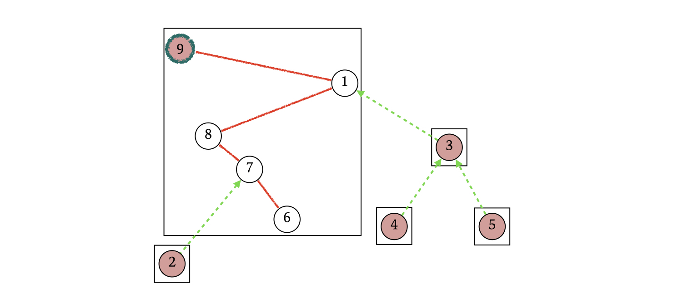
\(\mathrm{evert}\) によって根が動的に変化するので、頂点 \(x\) の親を特定するメソッドとして \(\mathrm{parent}(x)\) を備えておきます。
頂点 \(x\) の親の特定の手続きは以下の通りです。ただし、頂点を移動する際に遅延評価を評価することを忘れないように注意してください。
以下は \(\mathrm{parent}(7)\) の様子です。
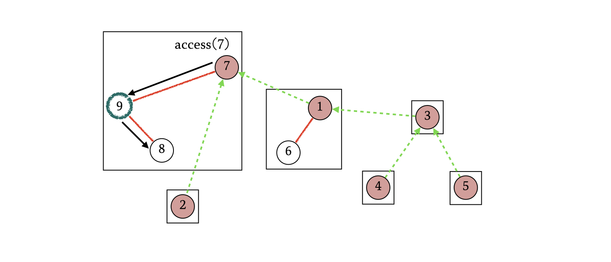
動的森なので連結成分が一つとは限りません。ここで満を持して、辺の追加を説明します。
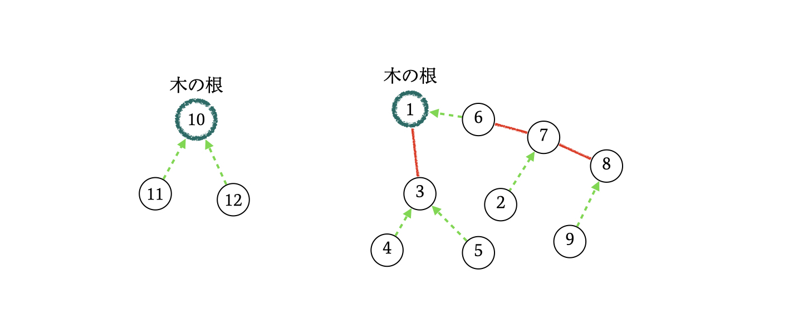
辺の追加を行うメソッドを以下で定義します。
手続きは以下の \(3\) ステップからなります。
以下は \(\mathrm{link}(12,9)\) の様子です。
まず \(\mathrm{access}(12)\) と \(\mathrm{evert}(9)\) を行います。
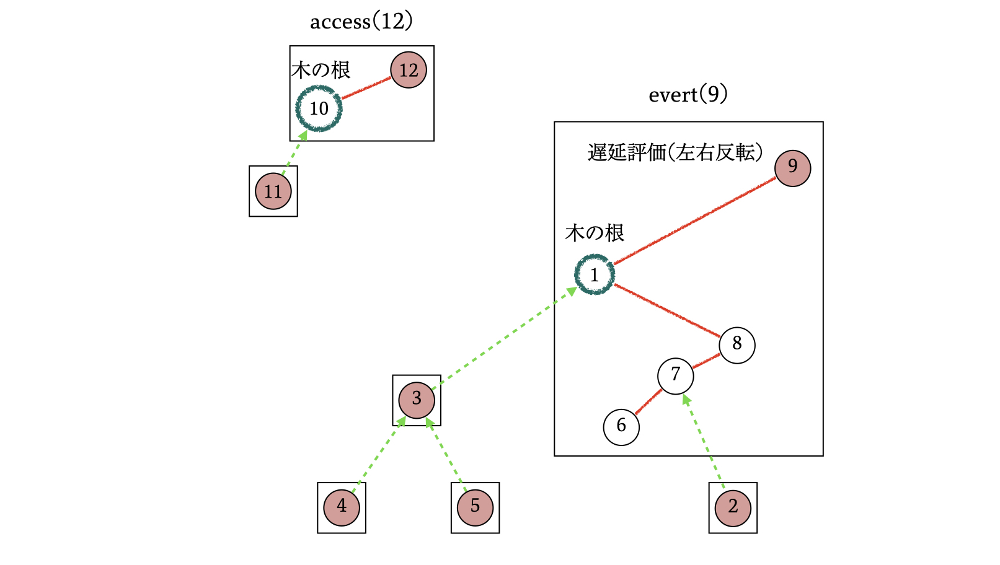
その後、頂点 \(9\) から頂点 \(12\) に向けて light-edge を追加します。これは頂点 \(9\) に対して、Splay Tree における親頂点を \(u\) にする操作です。
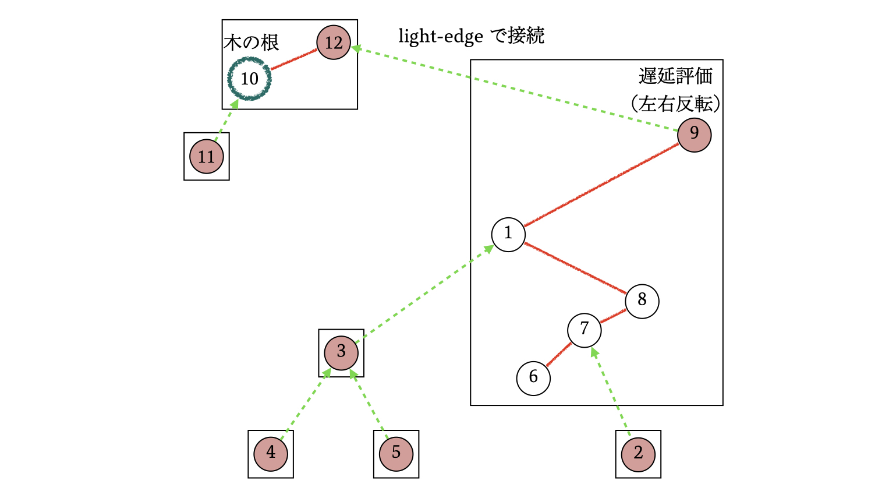
その結果、パスの分解の状況は以下の図のようになります。ちゃんと頂点 \(12\) と頂点 \(9\) がリンクされていることが確認できます。
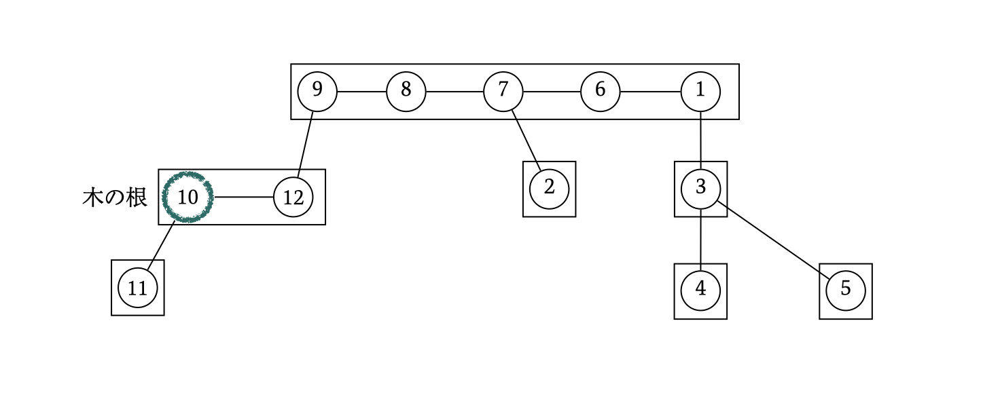
なお、左右反転の遅延評価があると見づらいので、例によって遅延評価を全て評価して解消した図で説明します。
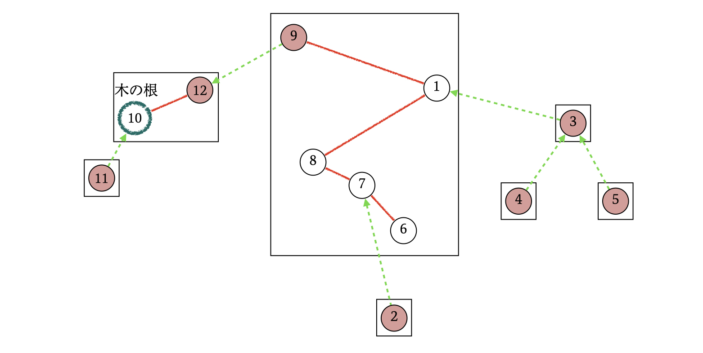
最後に、辺の削除を行うメソッドを以下で定義します。
手続きは以下の \(3\) ステップからなります。
以下は \(\mathrm{cut(8,9)}\) の様子です。
今回は頂点 \(8\) の方が深いので、根から頂点 \(8\) までのパスを構築します。
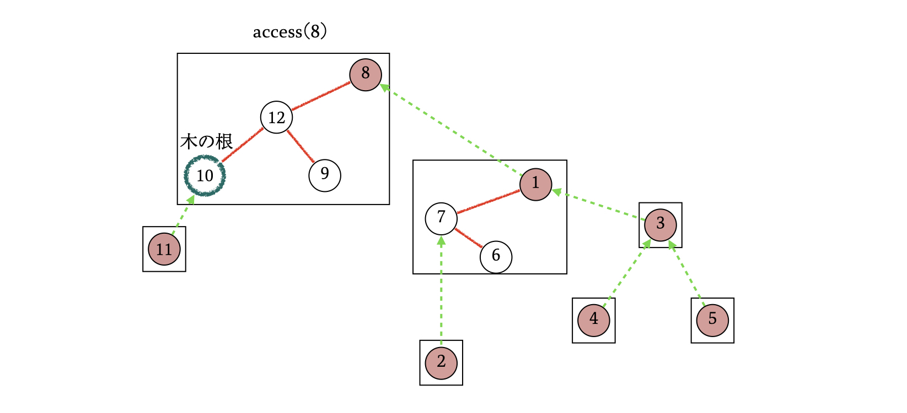
頂点 \(8\) からは左に heavy-edge が出ているので、これを完全に無くします。
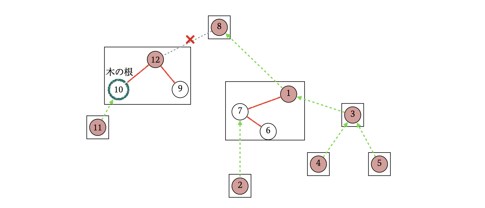
その結果、パスの分解の状況は以下の図のようになります。ちゃんと頂点 \(8\) と頂点 \(9\) が分断されていることが確認できます。
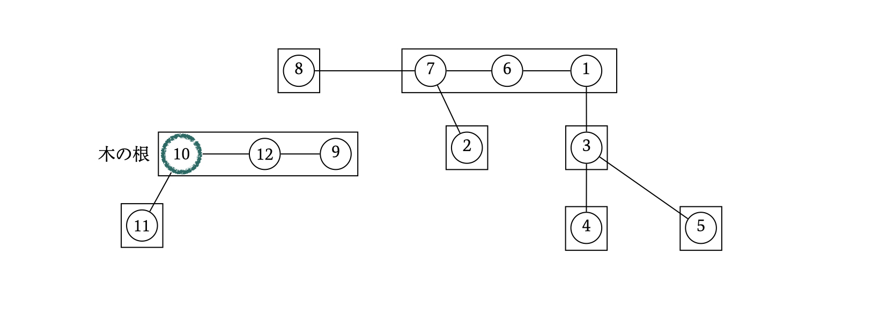
\(\mathrm{cut}\) などで、分断する \(2\) つの頂点間に辺が存在するかを判定する必要があります。これを LCT の機能で完備しておくこともできますが、定数倍の大きさを考えると、シンプルに \(2\) つの頂点をキーにとるハッシュテーブルなどで管理しておくのが良いと思います。
木の根や Splay Tree の根を勝手に想定するのは危険です。可能ならば、計算を行う前に \(\mathrm{access}\) や \(\mathrm{evert}\) によって明示的に根が何かを指定するのが好ましいです。
パスを Splay Tree で管理しているので、Splay Tree の機能を用いて、パス上の頂点の重みに対して一括で操作を行うことができます。総和、Min/Max、アフィン変換、一律更新など、Splay Tree で可能なら全て可能です。
頂点拡張で辺重みを持つ頂点を追加することで、頂点重みに帰着させることができます。
詳しいことを説明しませんが、クエリあたりの計算量は対数時間です。
いかがでしたか